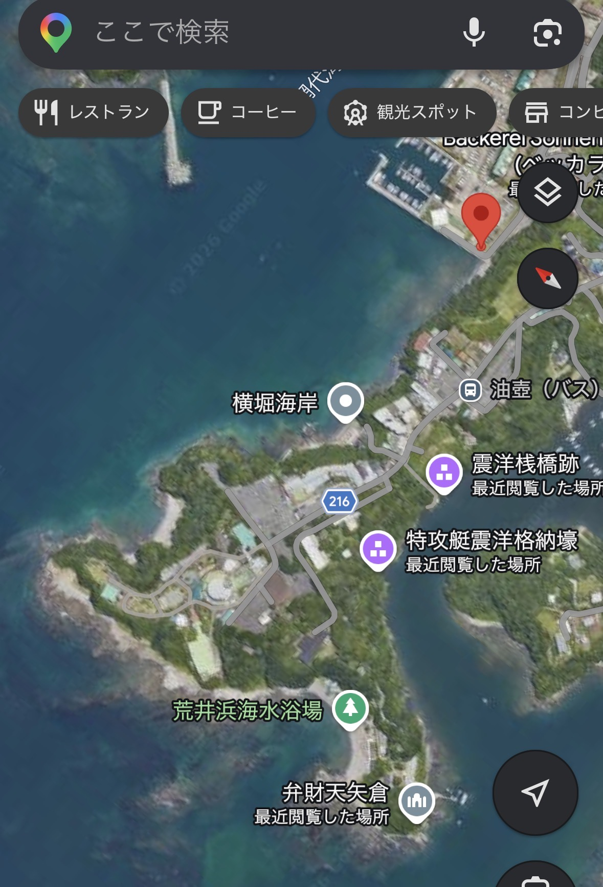
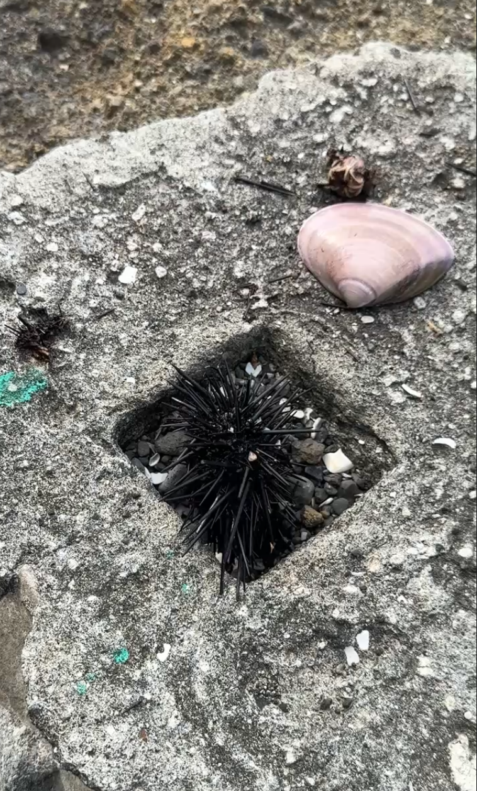
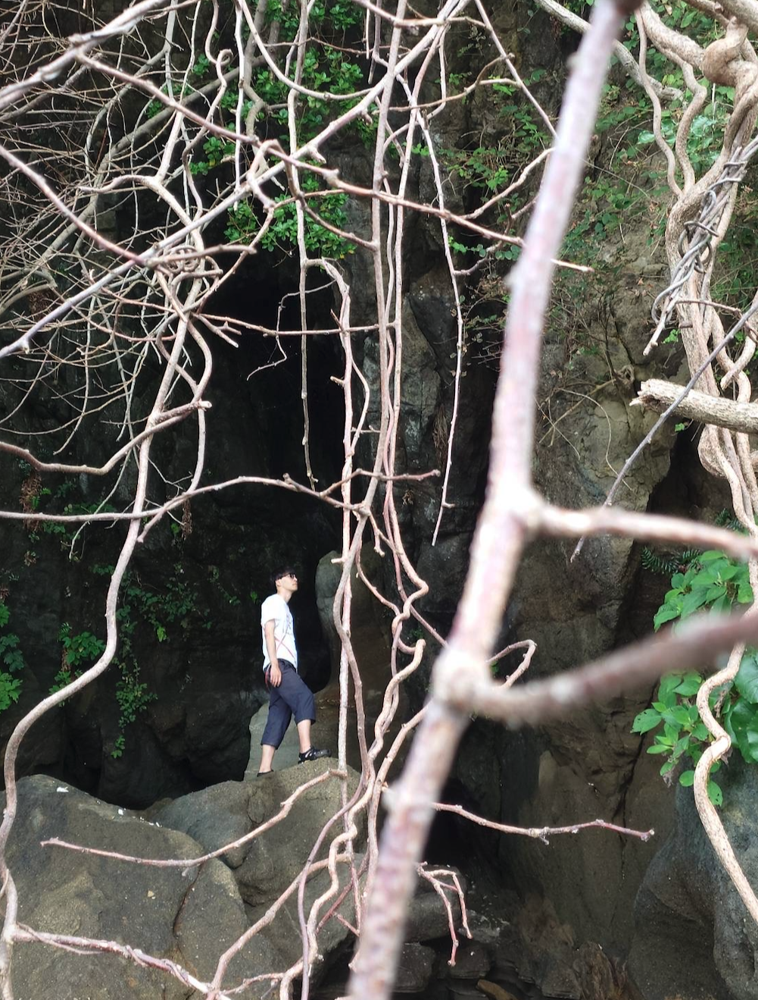
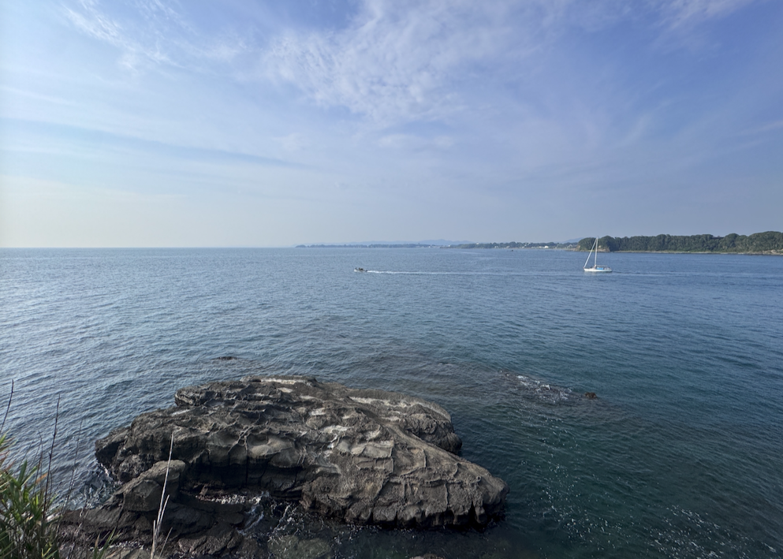

sense-of-wonder ・ フィールドノート
海岸を、ただ歩いた。
sense-of-wonder は、自然の中でふいに訪れる“言葉にならない感覚”を、事例から少しずつ形にしていく試み。これはその一次データ——昨日、三浦半島の油壺で海岸沿いを歩いた、一日のフィールドノートです。


海に入ってすぐ、コンクリートの窪みにウニがいた。黄色い身はごっそり無くなっていたのに、棘にそっと触れると、まだ動いた。生命の神秘、と言うと少し大げさかもしれない。でも、普段まわりにいない生き物——ふだん触れ合うことのない相手に、こうして触れられた。その実感が、素直に嬉しかったのを覚えている。
写真には撮らなかったけれど
海岸沿いには、やっぱりフナムシがいる。今の時期は小さな子どもが、見たこともないくらいびっしり岩に張りついていて、こちらが動いたり音を立てたりするたびに、群れごといっせいに動いていく。もう気持ち悪さはない。何度も海に来て慣れたのもあるけれど、彼らが海を掃除して、環境を保ってくれていると思うと、ありがたい生き物だなと思えた。

途中に入江のような場所があって、少し探索した。手つかずの自然が残っていて、香りも、音も、とても静か。言葉にするのは本当に難しいんだけど——太陽も、海も、岩も、そのすべてに包まれているような感覚があった。

廃れたハイキングコース、というのか、かつて道として作られたらしい跡を登ってみた。丘の上から、海が見えた。単純に、きれいだった。それに、あまり人の手が入っていない道を自分で見つけて歩けたことに、ちょっとした冒険のわくわくがあった。

最後は、海を一望できるスポットで。こうして写真を見返して思うのは、海って本当に、景色が変わらないなということ。どこか侘寂のような、同じ場所を二度通ったような感じがある。自分はそこに、落ち着き——というか、安心を得ているのかもしれない。
ウニの棘、フナムシの群れ、入江の静けさ、丘からの海、変わらない水平線。どれも大したことのない一瞬だけど、こういう積み重ねの中に、あの“包まれる感覚”の輪郭がある気がする。そんな一日だった。
sense-of-wonder は、レイチェル・カーソン『The Sense of Wonder』を起点に、こうした一次エピソードを集めて「共鳴」の輪郭を描いていく研究プロジェクトの、現場の記録です。写真・文：本人。